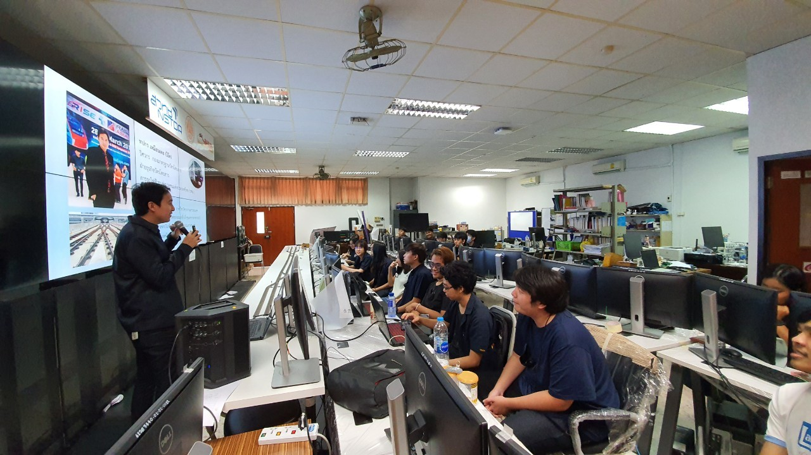

วิศวกรรมระบบไอโอทีและสารสนเทศ
B.Eng. (IoT system and Information Engineering)
ในโลกยุคดิจิทัล 4.0 ที่เทคโนโลยีต่าง ๆ
เข้ามามีบทบาทสำคัญเป็นอย่างมากในชีวิตประจำวันรวมถึงการพัฒนาเศรษฐกิจระดับประเทศ
ที่การเชื่อมต่อสื่อสารนั้นเป็นไปอย่างไร้พรมแดน ไม่เพียงแต่การสื่อสารระหว่างมนุษย์อย่างเดียว
แต่ยังมีการเชื่อมต่อส่อสารระหว่างอุปกรณ์กับอุปกรณ์ เครื่องจักร หรือทุกสรรพสิ่ง
จึงเป็นที่มาของเทคโนโลยีระบบอินเตอร์เน็ตในทุกสรรพสิ่งหรือเรียกสั้นๆว่าไอโอที (IoT)
ซึ่งประกอบด้วยเทคโนโลยีด้านสมาร์ทเซ็นเซอร์ การสื่อสารและเครือข่าย คอมพิวเตอร์และการพัฒนาซอฟต์แวร์
วิทยาการข้อมูลและปัญญาประดิษฐ์
ซึ่งเป็นศาสตร์ที่บูรณาการความรู้ในหลากหลายด้านหรือเรียกว่าสหวิทยาการเพื่อให้สามารถออกแบบสร้างนวัตกรรมด้านระบบไอโอทีและสารสนเทศได้
หลักสูตรวิศวกรรมระบบไอโอทีและสารสนเทศเป็นหลักสูตรที่ตอบสนองต่อนโยบายทางการพัฒนาเศรษฐกิจ
และอุตสาหกรรมของรัฐบาล โดยมีความสอดคล้องกันกับแผนพัฒนาเศรษฐกิจและสังคมแห่งชาติฉบับที่ 13 (พ.ศ.
2565-2569)
ที่ได้มีการกล่าวถึงการเปลี่ยนแปลงทางเทคโนโลยีแบบก้าวกระโดด (Disruption)
และหนึ่งในเทคโนโลยีที่สำคัญนั้นคือ
เทคโนโลยีระบบไอโอทีและสารสนเทศ เช่นเดียวกันกับอุตสาหกรรมเป้าหมายของประเทศ หรือที่เรียกว่า “S-Curve”
ที่มีอุตสาหกรรมอิเล็กทรอนิกส์อัจฉณิยะ และอุตสาหกรรมดิจิทัล (New S-Curve)
รวมถึงการพัฒนาเขตเศรษฐกิจพิเศษภาคตะวันออก (EEC)
ที่ภาครัฐจะสนับสนุนและมีความต้องการบัณฑิตในสาขานี้จำนวนมาก
หลักสูตรวิศวกรรมระบบไอโอทีและสารสนเทศ เป็นเสมือนฟันเฟืองที่เชื่อมองค์ประกอบของโลกดิจิทัลเข้าด้วยกัน
ทั้งศึกษาที่เรียนในหลักสูตรนี้จะได้ศึกษาและปฏิบัติเกี่ยวกับด้านเทคโนโลยีระบบไอโอทีและสารสนเทศโดยอาศัยความรู้พื้นฐาน
ทั้งด้านซอฟต์แวร์ ประกอบด้วย การเขียนโปรแกรมคอมพิวเตอร์ การพัฒนาซอฟต์แวร์และแอพพลิเคชัน
ด้านฮาร์ดแวร์ได้แก่
การพัฒนาอุปกรณ์อิเล็กทรอนิกส์อัจฉริยะและสมาร์ทเซ็นเซอร์ รวมถึงเชื่อมโยงส่อสารเข้าหากันด้วย
การศึกษาด้านการสื่อสารและเครือข่าย ไปจนถึงการประยุกต์ใช้เทคโนโลยีปัญญาประดิษฐ์และวิทยาการข้อมูล
โดยผสมผสานความรู้ต่าง ๆ เหล่านี้เข้ากับกระบวนการทางวิศวกรรมศาสตร์ คณิตศาสตร์
เพื่อออกแบบสร้างนวัตกรรมใหม่ ๆ
และส่งเสริมให้นักศึกศึกษาต่อยอดนวัตกรรมของตนเองเพื่อผลิตใช้หรือทำเป็นสตาร์ทอัพเพื่อสร้างธุรกิจของตนเองได้
- วิศวกรระบบไอโอที (IoT Engineer)
- วิศวกรระบบสารสนเทศ (Information System Engineer)
- วิศวกรระบบสมองกลฝังตัว (Embedded System Engineer)
- วิศวกรซอฟต์แวร์ระบบสมองกลฝังตัว (Embedded Software Engineer)
- นักพัฒนาแอพพลิเคชัน (Application Developer)
- โปรแกรมเมอร์ (Programmer)
- วิศวกรซอฟต์แวร์ (Software Engineer)
- นักพัฒนาส่วนหน้า (Front End Developer)
- นักพัฒนาส่วนเบื้องหลัง (Back End Developer)
- นักพัฒนาฟูลสแต็ก (Full Stack Developer)
- วิศวกรระบบคลาว์ (Cloud Engineer)
- วิศวกรระบบเครือข่าย (Network Engineer)
- นักวิทยาการข้อมูล (Data Scientist)
- วิศวกรข้อมูล (Data Engineer)
- ผู้ดูแลระบบ (System Administrator)
- นักวิจัย นักวิชาการ เจ้าของธุรกิจส่วนตัว และอาชีพอื่น ๆ ที่เกี่ยวข้องกับทางด้านคอมพิวเตอร์หรือไอทีทั้งหมด




ฟิสิกส์อุตสาหกรรมและวิศวกรรมระบบไอโอทีและสารสนเทศ
B.Sc. Industrial Physics + B.Eng. IoT System and Information
ครั้งแรกของประเทศไทยโครงการหลักสูตรปริญญาตรีสองปริญญา (Dual Degree)
ระหว่างคณะวิศวกรรมศาสตร์และคณะวิทยาศาสตร์
สถาบันเทคโนโลยีพระจอมเกล้าเจ้าคุณทหารลาดกระบัง วศ.บ. วิศวกรรมระบบไอโอทีและสารสนเทศ และ วท.บ.
ฟิสิกส์อุตสาหกรรม
ทำไมต้อง 2 ปริญญา?
ในโลกยุค Disruption ได้เปลี่ยนแปลงทุกสิ่งไปอย่างรวดเร็ว
การรู้เพียงศาสตร์ใดศาสตร์หนึ่งจึงอาจไม่เพียงพอกับการต่อสู้ในยุคแห่งการเปลี่ยนแปลงนี้แล้ว
โดยเฉพาะอย่างยิ่งทักษะทางดิจิทัลและเทคโนโลยีที่จำเป็นต่อโลกอันไร้พรมแดน จึงเป็นที่มาของหลักสูตร
“PhysIoT”
ที่ตอบสนอง กับการเปลี่ยนแปลงในยุค Disruption
นี้ให้บัณฑิตมีความรู้ที่รอบด้านทั้งทางด้านวิทยาศาสตร์และวิศวกรรมศาสตร์
อันเป็นศาสตร์สำคัญที่ช่วยขับเคลื่อนพัฒนาประเทศชาติ
เพื่อผลิตบัณฑิตนักฟิสิกส์ไอโอทีที่สามารถบูรณาการองค์ความรู้ที่จะสร้างนวัตกรรมเพื่อขับเคลื่อนประเทศไทยต่อไปในอนาคต
ตอบโจทย์อุตสาหกรรมในยุค Thailand 4.0 อุตสาหกรรม New S-Curve รวมถึงอุตสาหกรรมแห่งอนาคต
- นักวิจัยในภาครัฐและเอกชน
- ผู้ประกอบการทางธุรกิจเทคโนโลยีวิศวกรไอโอที(IoT Engineer)
- วิศวกรซอฟต์แวร์(Software Engineer)
- วิศวกรระบบสมองกลฝังตัว (Embedded Engineer)
- นักพัฒนาแอพพลิเคชัน(Application Developer)
- นักวิทยาการข้อมูล(Data Scientist)
- วิศวกรควบคุณภาพ
- นักพัฒนาส่วนหน้า (Front End Developer)
วิศวกรรมคอมพิวเตอร์และไอโอที
B.Eng. Computer Engineering and IoT
ทำไมต้องเรียนวิศวกรรมคอมพิวเตอร์และไอโอที (ต่อเนื่อง)
หลักสูตรวิศวกรรมคอมพิวเตอร์มุ่งสร้างวิศวกรคอมพิวเตอร์
ที่สามารถปฏิบัติงานในภาคธุรกิจได้อย่างมีประสิทธิผล
หลักสูตรเล็งเห็นความสำคัญของคณิตศาสตร์และทฤษฎีด้านวิทยาการคอมพิวเตอร์
ซึ่งเป็นพื้นฐานที่สำคัญของการแก้ปัญหาโดยใช้คอมพิวเตอร์
จึงได้จัดให้เรียนรายวิชาในกลุ่มนี้อย่างเพียงพอ ได้แก่ การเขียนโปรแกรม
โครงสร้างข้อมูลและอัลกอริทึม การพัฒนาซอฟต์แวร์ สถิติและความน่าจะเป็น พีชคณิตเชิงเส้น
โครงสร้างไม่ต่อเนื่อง (Discrete Structure) ทฤษฎีการคำนวณ
ซึ่งเป็นรากฐานที่สำคัญของการคิดเชิงคอมพิวเตอร์ และการเรียนวิทยาการคอมพิวเตอร์ขั้นสูง เช่น Data
Science ปัญญาประดิษฐ์ (AI) หรืออื่นๆ ต่อไป
นอกจากนั้นหลักสูตรยังได้จัดให้เรียนทฤษฎีด้านวิศวกรรมคอมพิวเตอร์ ได้แก่ พื้นฐานระบบดิจิตอล
องค์ประกอบคอมพิวเตอร์ สถาปัตยกรรมคอมพิวเตอร์ ระบบปฏิบัติการ และเครือข่ายคอมพิวเตอร์
เพื่อให้ผู้เรียนมีความเข้าใจในการทำงานของระบบคอมพิวเตอร์ และสามารถปฏิบัติงานในสายงานต่างๆ ได้
หลักสูตรนี้ออกแบบโดยมุ่งเน้นการฝึกปฏิบัติเพื่อให้เกิดทักษะความชำนาญในการปฏิบัติงาน
ปริญญาโท วิศวกรรมมหาบัณฑิต (เอไอโอทีและสารสนเทศ)
M.Eng. (AIoT and Information)
ปริญญาโท วิศวกรรมศาสตรมหาบัณฑิต (เอไอโอทีและสารสนเทศ)
หลักสูตรมุ่งผลิตมหาบัณฑิตที่มีความรู้และทักษะด้าน ปัญญาประดิษฐ์ (Artificial Intelligence),
Internet of Things (IoT) และระบบสารสนเทศ โดยเน้นการบูรณาการเทคโนโลยีดิจิทัลเข้ากับระบบจริง
เพื่อพัฒนาระบบอัจฉริยะที่สามารถเก็บรวบรวม วิเคราะห์ และใช้ประโยชน์จากข้อมูลได้อย่างมีประสิทธิภาพ
ผู้เรียนจะได้ศึกษาทั้งด้านสถาปัตยกรรมเอไอโอที ระบบฝังตัว การสื่อสารข้อมูล
การวิเคราะห์ข้อมูลและการเรียนรู้ของเครื่อง รวมถึงการออกแบบและพัฒนาระบบสารสนเทศสมัยใหม่
โดยมุ่งเน้นการประยุกต์ใช้งานในภาคอุตสาหกรรม องค์กร และสังคมดิจิทัล
พร้อมเสริมสร้างทักษะการคิดเชิงวิเคราะห์และการทำวิจัยเชิงประยุกต์ผ่านวิทยานิพนธ์หรือโครงงานวิจัย
ผลลัพธ์การเรียนรู้
ผู้สำเร็จการศึกษาจะมีความสามารถในการออกแบบ และพัฒนาระบเอไอโอทีและระบบสารสนเทศอัจฉริยะ มีทักษะการวิเคราะห์ข้อมูลและการใช้ปัญญาประดิษฐ์เพื่อสนับสนุนการตัดสินใจ สามารถแก้ปัญหาทางวิศวกรรมที่ซับซ้อนได้อย่างเป็นระบบ และมีจริยธรรมทางวิชาชีพตามมาตรฐานระดับอุดมศึกษาแนวทางการเรียนการสอน
หลักสูตรจัดการเรียนการสอนโดยผสมผสานการเรียนรู้ภาคทฤษฎีและภาคปฏิบัติ เน้นการลงมือปฏิบัติจริง การทำโครงงาน และการศึกษากรณี ตัวอย่างจากภาคอุตสาหกรรม เพื่อเสริมสร้างทักษะการประยุกต์ใช้งานและการคิดเชิงระบบการวิจัยและโครงงาน
ผู้เรียนจะได้ทำวิทยานิพนธ์หรือโครงงานวิจัยเชิงประยุกต์ด้านเอไอโอทีและสารสนเทศ โดยเน้นการแก้ปัญหา จริงและการพัฒนาระบบที่สามารถนำไปใช้งานได้ในภาคอุตสาหกรรมหรือองค์กรแนวทางอาชีพ
บัณฑิตสามารถประกอบอาชีพเป็นวิศวกรระบบอัจฉริยะ วิศวกรเอไอโอที วิศวกรระบบสารสนเทศ นักวิเคราะห์ข้อมูล หรือผู้เชี่ยวชาญด้านเทคโนโลยีดิจิทัลในภาคอุตสาหกรรมและองค์กรต่างๆ
ปริญญาเอก ปรัชญาดุษฎีบัณฑิต (เอไอโอทีและสารสนเทศ)
Ph.D. (AIoT and Information)
ปริญญาเอก ปรัชญาดุษฎีบัณฑิต (เอไอโอทีและสารสนเทศ)
หลักสูตรมุ่งเน้นการผลิตดุษฎีบัณฑิตที่มีความสามารถด้าน การวิจัยขั้นสูงและการสร้างองค์ความรู้ใหม่
ทางด้านเอไอโอทีและระบบสารสนเทศอัจฉริยะ
ผู้เรียนจะได้ศึกษาทฤษฎีและเทคโนโลยีขั้นลึกด้านปัญญาประดิษฐ์ ระบบ IoT อัจฉริยะ ระบบไซเบอร์-กายภาพ
และการจัดการข้อมูลขั้นสูง
ควบคู่กับการพัฒนางานวิจัยและนวัตกรรมที่สามารถนำไปประยุกต์ใช้ได้จริงและเผยแพร่ในระดับนานาชาติ
หลักสูตรมุ่งสร้างนักวิจัย นักวิชาการ
และผู้เชี่ยวชาญที่มีศักยภาพในการขับเคลื่อนเทคโนโลยีและอุตสาหกรรมดิจิทัลของประเทศ
ผลลัพธ์การเรียนรู้
ผู้สำเร็จการศึกษาจะมีความ สามารถในการวิจัยขั้นสูง การออกแบบและพัฒนาแบบจำลองหรือ อัลกอริทึมใหม่ด้านเอไอโอทีและสารสนเทศ สามารถวิเคราะห์และ สังเคราะห์องค์ความรู้เชิงวิชาการ และเผยแพร่ผลงานวิจัยในระดับนานาชาติอย่างมีคุณภาพแนวทางการเรียนการสอน
หลักสูตรเน้นการเรียนรู้ผ่าน การวิจัยเป็นหลัก ผู้เรียนจะทำงาน วิจัยอย่างต่อเนื่องภายใต้การดูแลของอาจารย์ที่ปรึกษา พร้อมทั้งศึกษารายวิชา ขั้นสูงเพื่อเสริมสร้างพื้นฐานทางทฤษฎีและการวิจัยการวิจัยและโครงงาน
ผู้เรียนจะได้รับการส่งเสริม ให้ผลิตผลงานวิจัยที่สามารถตีพิมพ์ในวารสารหรือการประชุมวิชาการระดับนานาชาติ รวมถึงการนำผลงานวิจัยไปประยุกต์ใช้หรือพัฒนานวัตกรรมที่ตอบโจทย์ภาคอุตสาหกรรมและสังคมแนวทางอาชีพ
ดุษฎีบัณฑิตสามารถประกอบ อาชีพเป็นนักวิจัย นักวิชาการ อาจารย์มหาวิทยาลัย นักพัฒนาเทคโนโลยีขั้นสูง หรือผู้นำด้านนวัตกรรมและการวิจัยในองค์กรภาครัฐและเอกชน